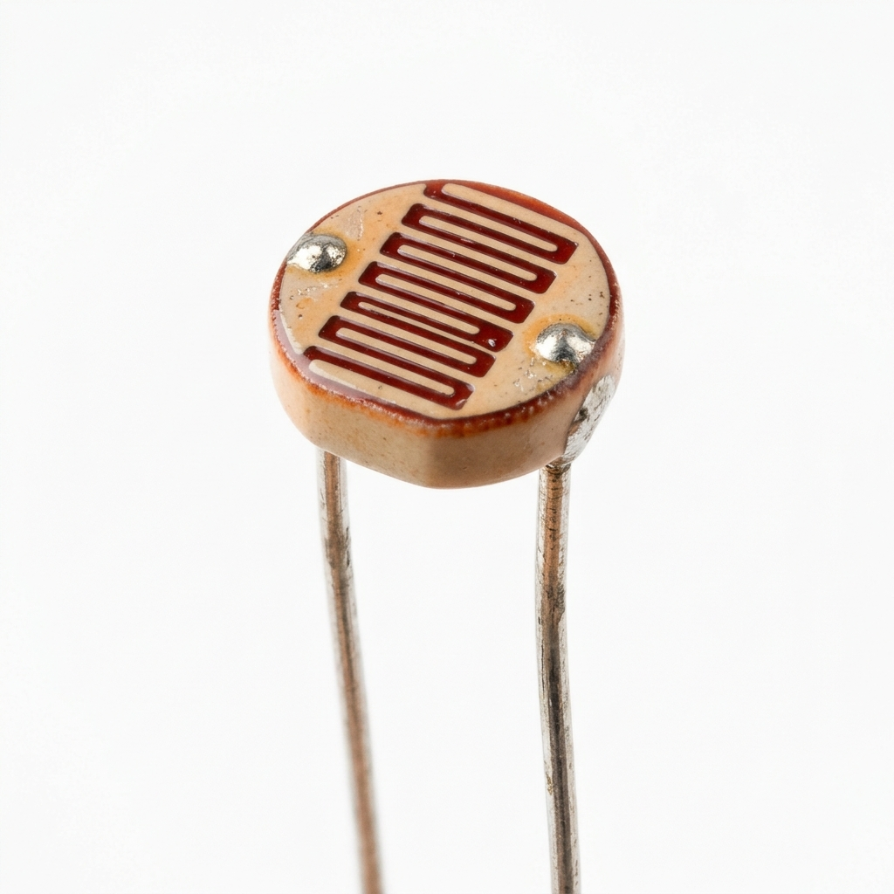

LDR
Categoria: Luminosidade
Conceito
O LDR (Light Dependent Resistor) ou fotoresistor é um componente eletrônico passivo cuja resistência elétrica varia inversamente à intensidade de luz que incide sobre ele.
Princípio de Funcionamento
Feito de material semicondutor (geralmente Sulfeto de Cádmio). No escuro, a resistência é altíssima (megaohms), funcionando quase como um isolante. Quando fótons de luz atingem o componente, elétrons são liberados, aumentando a condutividade e derrubando a resistência (para poucos kilohms ou ohms).
Principais Especificações Técnicas
- Tensão máxima: ~150V DC (depende do modelo)
- Resistência no escuro: > 1 MΩ
- Resistência à luz (10 lux): 10 kΩ a 20 kΩ
- Tempo de resposta: 20 a 30 ms
Aplicações Industriais ou IoT
Sistemas de iluminação pública inteligentes, controle automático de persianas, detecção de presença e qualidade de embalagens em linhas de montagem (por bloqueio de luz).
Exemplo em um Projeto
Iluminação Pública Inteligente (Smart City): O LDR detecta quando o Sol se põe. O microcontrolador lê a queda de luminosidade e envia um comando para ligar as luminárias do pátio industrial, economizando energia durante o dia.